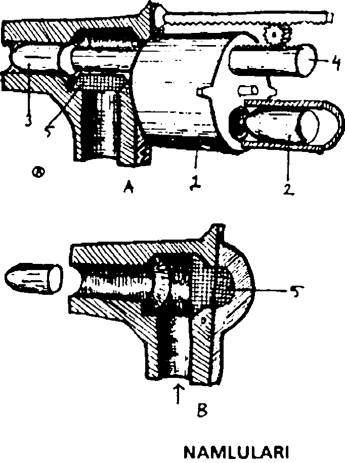

DAİM BORUSU
1- Cıva dolu hazneler. 2-3- Cıvayı emen boşluklar. 4- Kılıf (boruyu bilezik gibi sarar ve boru tepetaklak olunca aşağıda kalır). 5- Pistonları çeken ağırlıklar ekseni etrafında dönmeye başlayınca ağırlıklar merkezkaç kuvvetiyle fırlayıp pistonları çeker. Oluşan vakum, cıvayı yukarıya çekince boru tepetaklak olur.
Ziyafete çağrıldıklarında babalarının üzüm salkımım olduğu gibi ağzına sokup sıyırarak çöpünü çıkaracağından, çiğ köfteye tek eliyle değil iki eliyle yumulacağından, ağzında pilav varken bağırıp çağırarak pirinçleri misafirlerin üstüne başına sıçratacağından o kadar eminlerdi ki, yıllardır düğün derneğe bile gitmez olmuşlardı. Bu ihtiyar adam yüzünden Samur, kardeşine sık sık, “Dayan ey kardeşim! Çalışıp çabalayalım ve iş güç sahibi olalım. İşte o zaman babamıza hakkını verir ve bu diyardan gideriz. Böylece bizi artık kepaze edemez” diyerek destek veriyor, onu gayrete getiriyordu. Zamanla bu gayretleri sonuç verdi ve medresede hiyel ilmi tahsil ettiler. Artık kollarında bir altın bilezikleri vardı. Evden ayrılmadan önce babalarını son bir kez yola getirmeyi denediler. Onlara kalsa ihtiyar adam aziyenin altına don giymeye başlayacak ve bu yaşından sonra çarşı pazarda uzun uzun ve sesli yellenme zevkinden yoksun kalacaktı. Evlatlarına ağız dolusu küfredip, eğer evden ayrılacaklarsa kendisine mutlaka babalık hakkını ödemeleri gerektiğini söyledi. Yoksa hakkını helal etmeyecek, ikizler de insan içine çıkamayacaklardı. Sonunda onların önüne, bebekliklerinden bu yana yaptığı masrafların listesini çıkardı ve yekûnu ödemelerini istedi. Bu meblağ tam bindörtyüz altındı. O günden sonra Samur ve Yağmur Çelebiler bu parayı aramaya koyuldular. Nihayet uzak bir yerden, Dersaadet'ten teklif geldi. Calûd adında bir hiyelkâr, yanında iki yıl çalışmalarına karşılık onlara istedikleri parayı verecekti. Teklifi kabul ettiler ve ilk kervanla bindörtyüz altın geldi. Parayı babalarına verip hakkım helal etmesini sağladılar ve iki ay sonra Üsküdar'a ulaştılar. Peremeye binip Tophane'ye geçtikten sonra Yüksek Kaldırım'ı tırmandılar ve Mevlevihane'nin tam karşısındaki iki katlı eve girdiler. Atölyedeki teçhizatı görünce hayran kaldılar. Hele hele Calûd'un kitaplarını görünce kendilerinden geçtiler. Bu pehlivan yapılı adam onlara evin avlusundaki barakayı tahsis etmişti. Gece yarısına doğru, onlar derin bir uykuya daldıktan birkaç saat sonra, sabaha karşı avlu kapısı yumruklanmaya başladı. Ev sahibi Calûd da aşağıya inmişti. Kapıyı açar açmaz küfürbaz babalarını karşılarında gördüklerinde yerin dibine geçtiler. İhtiyar adam, babalık hakkı hesaplarında bir yanlışlık yaptığını, masrafın bindörtyüz altın değil de ikibinyüz altın olduğunu, eğer bu farkı ödemezlerse onlara hakkını helal etmeyeceğini bağıra çağıra söylüyordu. Sabahın o saatinde bas bas bağıran adam yüzünden sokaktaki evlerin ışıkları yandı ve kafalarında uyku takkeleri, üstlerinde gecelikleri ile insanlar kapının önünde birikince, Samur ve Yağmur Çelebiler yine rezil maskara olmamak için babalarının teklifini kabul ettiler. Ama bu kadar paraları yoktu. Böylece Calüd'la bir anlaşma daha yapmak zorunda kaldılar: Yeni efendileri onlara bu sözkonusu parayı verecek, ama onlar da tam otuz yıl, ayda adam başı onbeşer kuruş maaşla Calûd'un yanında çalışacaklardı.
Lalezar Necef Bey'in, Kılıç Ali Paşa Camii muvakkitlerinden, Kedigöz Beşir Dede'den naklettiği bir rivayete göre Calûd, Gülhane Hatt-ı Hümayûnu'ndan bir yıl, Cüstinyani'nin Cadde-i Kebir'de Fransız Tiyatrosu'nu açmasından ise altı ay sonra, Diyarbekirli ikiz hiyelkârların da yardımıyla yeni bir devri daim makinası yapmaya koyulmuştu. Artık otuz yaşını çoktan geride bıraktığı için, gücünü barındıran saçları ağarmaya yüz tutmuş, ancak Suvaş sefaretinin dükkânlarından birinde perükârlık yapan Angilidis Efendi'nin siyah saç boyaları imdadına yetişmişti. Kendini daha fazla yorup iktidarını israf etmek istemediğinden makinanın hesaplarını Samur ve Yağmur Çelebiler'e yaptırıyor, zavallılar adeta nefes bile almadan çalışırlarken o, gün boyu Galata balozlarını dolaşıp keyfine bakıyordu. İkizler ise, babalarından çok daha küfürbaz birinin yanına düştüklerini anlamalarına rağmen, konu komşuya, “Aramızda akrabalık falan yok. Biz sadece onun yanında çalışan iki efendiyiz” deyip durumu kurtarıyorlardı. Gelgelelim ne kadar küfürbaz olursa olsun Calûd, yerine ve zamanına göre tam bir efendi gibi davranabiliyordu. Her şeyden önce, tıpkı tersaneliler gibi kırmızı ve kalıplı bir dalfes giyiyordu. Üstünde ise bir istanbulin vardı. Ölü çocuklar doğurmaya devam eden karılarının kolaladığı yakalar her zaman temiz ve bembeyazdı. Hava sıcak olduğu zamanlar istanbulinin yerini gırtlağa kadar ilikli bir setire alırdı. Bu haliyle görenler onun, Paşa Kapısı'nda çalışan bir kalem efendisi zannederdi ki, zaten Calûd'un amacı da buydu. Ne var ki devri daim makinasının hesaplarının bir türlü tutmaması, kıyafetinin dağılmasına yolaçtı. İki sü~ nepe hiyelkâr, bir ağırlığın düşerken kurduğu yaydaki kuvvetin, o ağırlığı, katettiği yol kadar yükseltemeyeceğini küstahça iddia ediyorlardı. Onlara kalsa Calûd kuruşlarını boş yere harcıyordu. Kendilerine gelince, onlar alacakları paraya bakarlardı. Ama iyilik olsun diye tabiatın bir gerçeğini kendisine hatırlatmak istemişlerdi. Eğer mümkünse devri daimin yolu yerçekiminde değil, başka bir şeyde aranmalıydı. Fakat bütün bu sözler hiçbir işe yaramadı. Calûd, yarısı kurşun yarısı tahta olan bir çubuğun, tam ortasından bir mil geçirildiğinde ve ağır taraf üste geldiğinde asla dengede duramayacağını, tahtaravallide olduğu gibi kurşunlu tarafın daima altta kalacağını söylüyordu. İşte devri daimin sırrı da buradaydı. Ağır taraf alta geldiğinde derhal hafiflemeli, hafif olan kısım da ağırlaşmalıydı. Samur ve Yağmur Çelebi- ler'in bunun mümkün olduğunu ama sürekli harekete yo- laçmayacağını söylemelerine rağmen o, Nuh dedi peygamber demedi. Üstelik böylesi bir düzeneği kurmaları için onlara altı ay mühlet verdi. Tam orta yerinden bir mil geçirilen, tahtaravalli misali öyle bir boru tasarlayacaklardı ki, borunun iki ucu hem hafifleyecek hem de ağırlaşacaktı. İkizler, günlerce, haftalarca, aylarca düşündüler, hesapladılar. Akılları hiç basmamasına rağmen, sadece Calûd'un verdiği görevi yerine getirmek için bir boru tasarladılar. Aslında çok kalın olan bu boru, bir pistonlar şebekesiydi. Altında ve üstünde cıva dolu iki hazne vardı. Üstüne de, yüzeyinin yarısını kaplayan, aşağıya ve yukarıya kolayca hareket eden bir kılıf geçirilmişti. Borunun alt ve üst bölümlerinde, her birinin ucunda birer ağırlık bulunan kırksekizer piston vardı. İşte, boru kendi ekseni etrafında hızla döndürüldüğünde, merkezkaç kuvvetiyle yerlerinden fırlayan ağırlıklar pistonları çekecek, böylece borunun ortasında bir vakum oluşacaktı. Bu vakum, borunun altındaki cıvayı emip yukarıya çıkarınca, borunun üstü ağırlaşacaktı. Ağırlaşan kısım yerçekiminin etkisiyle aşağıya inip hafif kısım da yukarıya çıkınca aynı süreç tekrar edecek ve böylece, devri daim denen imkânsızlık sözümona gerçekleşecekti. Her şey iyiydi hoştu ama Calûd'un buna da bir kusur bulacağına kesin gözüyle bakıyorlardı. Çünkü boruyu ekseni etrafında döndürecek bir kuvvet gerekliydi. Ne var ki çizdikleri planları işverenlerine gösterdiklerinde korktukları başlarına gelmedi. Ölü doğan tam yetmişyedi ceninin babası olan bu adam, sonsuz iktidara bir adım daha yaklaştığına inanarak sevinçle bağırıyordu. Üstelik boruyu döndürecek kuvveti de bulduğunu söylüyordu. Böylece Calûd, bütünüyle yersiz bir heyecanla tam üç ay balozlardan kerhanelerden elini eteğini çekip devri daim makinesini tamamladı. İkiz hiyelcilerin yaptığı boruyu, bu kez, tıpkı coğrafya bilginlerinin yerkürelerinde olduğu gibi birbirlerini dik açıyla kesen, biri yatay, biri düşey iki çemberin içine oturtmuştu. Çemberler birbirlerine bağlıydı ve boru, onlardan düşey olanına, yatay olan diğeri ise bir kaideye ikişer mil yardımıyla bağlıydı. Öyle ki, boru, bu düzenek içinde hem yatay hem de dikey olarak dönebilirdi. Ayrıca bu sisteme bir kasnak ile, aynı zamanda bir dişli de olan dikey çembere bağlı bir çark düzeneği de eklemişti. Bu ağırlık düşerken kasnağı, kasnak da bir dişli aracılığıyla boruyu döndürüyordu. Boru dönerken tam kırksekiz ağırlık merkezkaç kuvvetiyle yerlerinden fırlayıp pistonları çekiyor ve böylece emilen cıva yukarı çıktığından boru tepe taklak oluyordu. Ancak boru bu dönüşü elbette dikey çember ile yaptığından, bu çembere bağlı olan çark, boruyu döndüren ağırlığı tekrar yukarı çekiyordu. Ağırlık yükselince bir tetik sistemiyle tekrar düşüyor, boru yine dönüyor ve böylece sürekli hareket meydana geliyordu. Fakat boru dönerken altta kalan ağırlıklar yerlerinden fırlamıyordu. Çünkü borunun yarısı uzunluğundaki bir kılıf, tıpkı bir bilezik gibi daima alt bölüme düşerek onların merkezkaç kuvvetiyle fırlamalarına izin vermiyordu. Kısacası, hemen her şey akla yatkındı ama ağırlık ve kuvvet hesaplarının doğru yapılması gerekiyordu. Bu yüzden Calûd, çizdiği planlan Samur ve Yağmur Çelebiler'e verip onlara, uygun madeni seçmelerini, boyutları hesaplamalarını ve makinayı bir an önce yapmalarını söyledi. Ne var ki râviyân-ı ahbar ve nakilân-ı âsâr, Samur ve Yağmur Çelebiler'in onbeşer kuruş maaşla tam altı yıl çabalayıp bu makinayı işletmeye çalıştıklarını, üzerinde türlü türlü değişiklikler ve düzenlemeler yapmalarına rağmen başaramadıklarım, hem işverenlerinin azarlarından yılıp hem de bu fuzuli işe akıtılan su gibi paraya acıdıklarını, nihayet Françe payitahtında iştiraklerin sokaklara barikatlar kurdukları ve Dersaadet'te esir ticaretinin yasak edilip Cadde-i Kebir'de ise Parodi Tiyatrosu'nun açıldığı yıl, efendilerini vazgeçirmeyi başardıklarım rivayet etmiştir.
Caludun Yılanı
1- Makina dairesi. 2- Pençeler. 3- Gömlek. 4- Omurga. 5- Kumanda telleri. 6- Pistona bu harın basılmasını ve pistondan boşaltılmasını sağlayan tel.
Zerduva Kazım Paşa damadı Ali Sansar Efendi, o tarihlerde, yani Kırım Savaşı arefesinde Cadde-i Kebir'in usul usul büyüdüğünü, açılan tiyatrolarda kaşlı gözlü, ahu bakışlı, gül yüzlü, kiraz dudaklı aktrislerin boy gösterdiğini, yahut onların giyinik, yarı çıplak veya anadan doğma gravürlerinin elden ele dolaştığını, böylece Calûd dahil bütün mah- bubperest ve sanemperverlerin Galata'dan yavaş yavaş bu sokağa çıkmaya başladıklarını yazmıştır. Delidumanzade Gülcemal Efendi ise, onu devri daim gibi beyhude bir uğraştan vazgeçirmek amacıyla Samur ve Yağmur Çelebiler'in, dillerde destan bir kadın oyuncu gravürünü Calûd'un görebileceği bir yere bırakıp böylece efendilerinin aklını biraz olsun başka yönlere çekmeyi düşündüklerini rivayet etmiştir. Oysa Havaî Mercan Dede, onun bu kadın gravürünü tam yirmisekiz kuruşa bir Ermeni kabadayısından aldığını söylemiştir. Gravürün kökeni hakkındaki gerçek ne olursa olsun, Ali Sansar Efendi, Delidumanzade Gülcemal Efendi, Mercan Dede ve diğer râvilerden nakledildiğine göre Calûd, gönlünü Esmeralda adındaki bu kadına kaptırarak yanıp tutuşmuş, onu adım başı yâd edip aşkıyla ve şevkiyle inlemiş, koynunda sakladığı resmini çıkarıp çıkarıp bakarak kadının yuvarlak hatlarını gönlüne ve zihnine adeta kazımış, böylece devri daim tutkusu biraz olsun yatışır gibi olmuştu. Ancak kendisi artık orta yaşlı biriydi. Esmeralda ise, eğer ressam bir hiyle yapmamışsa, en fazla yirmisinde gösteriyordu. Kalçaları Şah İsmail'in tahtına sığmayacak kadar geniş, beli iki elle kavranacak kadar ince, memeleri de Ca- lûd'un koca avuçlarından taşacak kadar dolgundu. Kısacası o kadar şuh, o kadar işveli görünüyordu ki, devri daim ma- kinasına eskisi kadar ilgi gösteremeyen hiyelkâr, kendisine ölü bebekler doğurmaya devam eden sekiz karısıyla yatarken daima Esmeralda'yı düşünüyor, gün gelip maslahatının, o koca kalçalar arasındaki hazine mağaralarına duhul edeceğini umuyordu. Onu üzen diğer bir şey de, birinde kızıl diğerinde kara yakut bulunan bu iki mağaraya aynı anda girip çıkabilecek iki anahtarının olmamasıydı.
ÇİFT BAŞLI YILANIN AĞZINDAKİ ÇATAL TOP
1- Mermilerin girdiği kapaklar. 2- Mermileri namluya süren sistemi harekete geçiren çubuklar. 3- Kolt türü tabancaların toplarının bir türü olan, ekseni etrafında dönüp mermiyi şarjörden alan ve sürgü mekanizmasının önüne getiren kartuş. 4- Ana namlu kapakları (ikisi üstüste geldiğinde birbirlerini kilitleyip barut gazının kaçmasını önlerler. Namlu geriye teptiğinde ise yuvalarına yerleşir ve yeni barutun sürülmesine bir engel teşkil etmezler). 5- Mermilerin bulunduğu şarjör. 6 - Mermileri süren dilin bulunduğu yuva. 7- Barut hartuçu. 8 - Mermileri namluya süren dil. 9- Barut hartuçunu ana namluya süren dil. Çatal top ateş alır almaz geriye teptiğinde 2 numaralı çubukları itip, dillerin, 1 numaralı kapaklardan içeri yeni mermileri sürmesini sağlarlar. Bu kapaklar, ana namludan gelen barut gazının basıncıyla kapandıklarından, bu gazı kaçırmamaları için kilitlenmeleri gerekmez. Barut ve mermi sürme sistemiyle, top seri olarak, defalarca ateş edebilir. Mermilerin kalibresi sabit değildir. Şarjördeki mermiler büyük çaptan küçüğe doğru dizilirler. Böylece sürtünmenin yarattığı ısıdan namlu genleşse bile atış devam eder.
Evet, İskender'in kudret ve zürriyetinin fışkırdığı o koca mashalatından bir tane daha olsun istiyordu. Kendisini, biri üstte biri altta bu çifte zekeriyle, Esmeralda'yı zevkten feryadlar attırırken hayal ediyor, fışkıran avuç avuç hayat suyunun ma ğaraları doldurduğunu, yanan yakutların alevini ve ışıltısını söndürdüğünü tekrar tekrar zihninde canlandırıyordu. Ne var ki yaşı artık ilerlediğinden bütün bunların la yıkıyla olacağı şüpheliydi. Her doğum sonrası kuyuya atılan ceninlerle birlikte sanki kendi iktidarından da bir parça yitip gitmişti. Nice zamandan bu yana bulutları delecek kadar dik ve mağrur olmayan granit iktidar kulesi, daha uysal, daha ağır başlı olduğundan mıdır, sırada bekleyen yedinci ve sekizinci dilberlerin cazibesine boyun eğmeye, onuncuda ise uykusu gelmiş bir çocuk gibi mızmızlanmaya, onbirincide ise derin ve huzurlu bir uykuya dalmaya başlamıştı. Bu yüzden Calûd, Mısır Çarşısı'na sık sık gelip gitmeye başladı. Yetmiş yaşındaki erlere üçüz evlatlar verebilecek tiryaklar ve padişah macunları, maslahatını daha uslanmaz, daha dik başlı yapmıştı. Klavsiyus adındaki bir âlimin hiçbir güç kaynağının sonsuz olmadığı kâinatın gücünün de gün gelip tükeneceğini iddia ettiği kitabı okurken, tam bir kavanoz padişah macununu midesine indirip kafasındaki fırtınayı dindirmeyi denemişti. Ama zihnindeki uğultu kesilecek gibi değildi. En büyük korkusu, Esmeralda'yla yatmadan kendi fildişi kulesinin yıkılmasıydı.

ÇATAL TOPUN NAMLULARI
1 - Mermilerin bulunduğu kartuş (A) dönerek şarjörden alır ve sürer. 2- Şarjör. 3- Sürülmüş mermi. 4- Sürgü 5 - Namlu kapağı. Ana namludan gelen barut gazı kapağı kapatır ve mermiyi çatal namludan atar ( B).
İşte o, bu uğultu ve korkular içinde bocalarken, İngiliz ve Fransız donanmaları Beykoz'a demirledikten bir sure sonra Kırım Savaşı patlak verdiğinde, duyduğu bir haber Calûd'un yüreğini yerinden oynatıverdi. Esmeralda, bir tiyatro kumpanyasıyla Dersaadet'e geliyordu.
Yine Ali Sansar Efendi'den nakledildiğine göre Calûd, vurulduğu kadının geleceğinin rivayet edildiği gün Karaköy'e inerek gemilerden yolcu taşıyan kayıkların yanaştığı iskelede saatler boyu beklemişti. Hava karardığında, iskeleye yanaşmak üzere olan son kayıkta Esmeralda'yı tanıdı ve bütün vücudunu bir ateş sarıverdi. Kadın, diğer oyuncularla bir faytona binerken ona yaklaşarak, tanesine ikişer kuruş saydığı gülleri vermek istedi ama Parodi Tiyatrosu'nun namlı fedaileri onu sille tokat uzaklaştırdılar. O akşam, vücudunu saran ateş hâlâ sönmemişti. Gece boyunca uykusunda tam iki kez boşalıp yastığı yorganı batırdı. Sabah olduğunda ise ateş onu çıldırtacak gibiydi. Hele öğlen olunca çıldırmasına ramak kalmıştı. Yarım kavanoz macun yutup aşiftelerde teselli aramasına rağmen Esmeralda aklından çıkmıyordu. Bu yüzden ertesi sabah doğruca Parodi Tiyatrosu'na gitti. Cebindeki altınlardan kırkını fedailere verip, kadının bulunduğu kumpanyanın yöneticisi olan Portekizliyle niyeti konusunda açık açık konuştu. Portekizli, onun isteğini Esmeralda'ya ileteceğini ve ertesi gün uğramasını söyledikten sonra, Calûd gece boyunca gözünü kırpmadı. Gün doğar doğmaz Cadde-i Kebir'e çıkıp yöneticiyi buldu: Esmeralda teklifi kabul etmişti. Ancak bir gece için tam ikibinbeşyüz Frank istiyordu. Calûd parayı peşin ödeyecek ve tam iki gün sonra, tiyatroda bir paşanın da hazır bulunacağı piyes biter bitmez gece onların olacaktı. Kamelyah Hatun adlı bu piyes, tiyatroya heves eden paşa için bir Ermeni tarafından romandan uyarlanarak tercüme edilmişti. Esmeralda ise anlamını bilmediği metni ezberlemekten fırsat bulamadığı için bu süre zarfında Calûd'la görüşemeyeceği için üzgündü. Şehveti doruk noktaya çıkan bu adam sevinçten çıldıracak gibiydi. Yıllardır beklediği kadınla birleşmesine birkaç gün kalmış, üstelik bu iş sudan ucuza mal olmuştu. Kalbi şehvetten attığı halde, gücünü israf etmemek için karılarıyla ve aşiftelerle yatmayı kesti. Altınlarından iki kese alıp bir sarrafta Franka çevirdi ve parayı Portekizliye ödedi. Son gün, Mısır Çarşısı'nı dolaşıp gergedan boynuzu, zührevi macunlar, uykudaki çocukları taştan kuleler haline getirecek tiryaklar aradı ve o meşum ilacı gördü. Satıcı yeminler ederek, kapkara cam bir şişedeki ilacın ejderha menisi olduğunu ve sadece iki damlasını içen bir ihtiyarın apışarasında taşıdığı ölü serçesinin ansızın kanatlanıp kartal kesileceğini, derin ve karanlık uçurumlara dalıp sivri pençelerini kınalı kekliklere kolayca geçirebileceğini anlatıyordu. Bu sözleri dinleyen Calûd, hayatını altüst edecek bir şey yaptı: Tam on altın saydığı bu ejderha menisini bir dikişte içip bilirdi. Çünkü Esmeralda'yla birlikte olmasına sekiz saatten az bir zaman kalmıştı. Fazla vakit kaybetmemek için Karaköy'e geçip Yüksek Kaldırım'ı tırmandı. Evinde, boynuna, ensesine ve yavaş yavaş uyanan maslahatına kokular sürüp, en güzel, en şık elbiselerini giydi. Çoktandır siyaha boyadığı saçlarını taradı ve fesini başına geçirdi. İki gündür havagazıyla aydınlatılan Cadde-i Kebir'e çıktığında hava kararmıştı. Elini pantolon cebine sokup, ejderha menisinin etkisiyle taş kesilen maslahatını yokladı. Her şey yolundaydı ama ikinci bir zekeri olmaması, onda hâlâ bir eksiklik duygusu yaratıyordu. İki başlı yılan fikri de işte o anda aklına geldi. Kızıl ve kara yakutların ışıldadığı iki mağarayı aynı anda koruyan ikiz yılanlar zihnini usul usul kemirmeye başladığında Parodi Tiyatrosu'nun kapısından girdi ve kalabalığın arasına karışıp salondaki yerini buldu. Paşanın tam on sıra arkasındaydı. Oyun başlayıp Esmeralda sahneye çıktığında, yılanının ağzından o şehvet yağı çoktan sızmaya başlamıştı. Fakat o, bütün gece bağırtıp inleteceği kadını düşünürken, az sonra çıkacak bir aksilikle hayatının altüst olacağının farkında bile değildi. Gerçekten de, bir Ermeninin uyarladığı oyunda, Kamelyalı Hatun'a yirmi kese altının Mısır Hidivi tarafından ödenmiş olduğu ortaya çıkar çıkmaz, bunu hiç beklemeyen seyircilerden bir hayret nidası yükseldi. Ne var ki, bu nida yatıştığında arka sıralarda bir itiş kakış başladı. Adamın biri kalkmış, peygamberliğini ilan ediyordu. Gerekçesi de, o parayı Mısır hidivinin ödediğini önceden tahmin etmesiydi ki, bu da onun geleceği gördüğünün en açık delili sayılırdı. İtiş kakış böylece büyüdü ve fedailer içeri dalar dalmaz tabancalar ateşlenmeye başladı. Akan kanları gören Esmeralda kendinden geçip yere yığılır yığılmaz Calûd'un aklı uçtu. Sahneye fırlamak istedi ama suratına okkalı bir yumruk yedi. Diğer oyuncular kadını sahneden taşırlarken o, bir köşeye sinip kavganın yatışmasını bekledi ve iki saat sonra Portekizliyi buldu. Aldığı cevap korkunçtu: Esmeralda hâlâ ayılmamıştı. Bu yüzden onu iki gün sonra, gece yarısı kabul edecekti. Büyük bir hayal kırıklığıyla evine doğru yürümeye başlayan Calûd, aksi gibi maslahatının bir türlü uyumadığını farketti. Bu hal gece boyunca sürdü. Ertesi sabah ilk ağrıları hissetmeye başlayınca hindistan kâfuru kokladı. Ama kuşu uyumak bilmiyordu. Öğleye doğru ağrıları arttıkça arttı. Karanlık çöktüğünde bir hekim çağırmak zorunda kalmıştı. Yahudi hekim, dimdik olan ve artık morarmaya başlamış zekeri görünce, Calûd'a belki de hayatının en kötü haberini verdi: O, namı bütün kerhanelere yayılmış olan, kadınların dillerinden düşürmediği, o meşhur, o ağızdan ağıza dolaşan maslahatında kangren başlamıştı. Eğer birkaç saat içinde kesilmezse Calûd'un kanı zehirlenecek ve ölecekti.
Râviyân-ı ahbar ve nâkilan-ı âsâr, azot protoksitle uyuşturulduktan sonra zekeri kesilen, böylece ölmekten kurtulan Calûd'un tam bir ay evden çıkmadığını, sekiz karısının ise sanki evde matem varmış gibi ağıtlar yaktığını, öyle ki, evde ölü var zannıyla başsağlığına gelen konu komşunun güçlükle defedildiğini, olay ister istemez duyulduğunda Yüksek Kaldırım'ın bütün aşiftelerinin gözyaşı döktüğünü yıllarca meyhanelerde, kıraathanelerde ve yeni yeni açılan birahanelerde hikâyet etmişlerdir. Eliuzun Kamil Paşa dünürü Altın Bey ise onun, kendisine ejderha menisi satan esnafı üç beş arkadaşıyla gelip falakaya yatırdığını, üstelik adamın ne acılar çektiğini daha iyi anlamak ve hissetmek için zavallının tabanlarına vurulan beşyüz değneğin aynısının kendi ayaklarına da eksiksiz vurulmasını istediğini nakletmiş, Buzağızade Maymun İlham Efendi de, her ne kadar itibarı azaldıysa da, Calûd'un, yanından ayırmadığı Koltu bırakıp kemerine otuzsekizlik bir Horzenhayger sıkıştırarak, erkekliğine yönelik en ufak bir istihzayı anında cezalandırdığını söylemiştir. Çapraz Gülcemal Efendi ise bir başka rivayet nakletmiştir ki, buna göre Calûd'un yolu muhitindeki bir batakhaneye düştüğünde namlı kabadayılardan biri, onu kasdederek çevredekilere, "Herkes çakşırını indirsin de zurnası en kısa olanın kâsesine bir lehim yapalım" deyince o, namlusu dokuz inçlik Horzenhaygerini çıkarıp, "İşte benimki! Haydi şimdi şeninkini görelim" diye bağırmış, beti benzi atan zavallı ise uçkurunu çözüp apışarasındaki bamyayı elâleme gösterip rezil olduğunun ertesi günü, bir viranede, otuzsekizlik bir silahla kafası dağılmış bir halde bulunmuştu. Hemen hemen bütün râvilerin ortak olduğu bir nokta da, kesilen maslahatının, aslında Calûd'un iktidar tutkusu için bir emniyet süpabı olduğuydu. Öyle ki, Yahudi hekim o gece işini bitirir bitirmez, onun bu tutkusu kat be kat güçlenerek bedeninin geri kalanını sarmış, zihnindeki korları yeniden tutuşturmuş, nefretini büyütmüştü. Evet, bu nefret artık ona hükmediyordu. Karıları evden birer ikişer kaçmaya başladığında, gönlünü yakan kavuran ateşin nefret olduğunun pek farkında değildi. Belki de, bu duygunun sebepleri üzerinde düşünseydi, benliğini kesin ve aşılmaz sınırlarla belirlediğini, böylece kendisini geri kalan her şeyden, Dünya'dan ayırdığını, bu yolla bir parçası olmaktan çıktığı o engin okyanus, yani Dünya karşısında elbette ki cılız, sakat ve yetersiz düştüğünü görebilirdi. Fakat o haliyle bütün bunları elbette ki düşünemezdi. Bu yüzden varlıklarını benlikleriyle sınırlayan ve dolayısıyla, aslında ona ait olduklannı bilmedikleri Dünya karşısında cılız ve sakat olduklarını hisseden insanlar gibi, varlığını tehdit ettiğine inandığı o devle savaşmaya karar verdi. Bu dev, Dünya'nm ve onun içindekilerin ta kendisiydi. Ona ait olmak ise, ona yenilmek, yani ölmek demekti. Ancak bu bir bakıma doğru sayılırdı. Çünkü Dünya'nm bir parçası olmak, bedenin değil benliğin ölümü olmalıydı. Ne yazık ki o, Dünya'yı bir kuvvetler toplamı olarak gördüğü için meselenin püf noktasını anlayamazdı: Bu kuvvetler, yani pençeleri, boynuzlan, dişleri ve bıçakları olan hayvanlar onu tehdit ediyordu, o ise hayatta kalmak zorundaydı. Bunun da bir tek yolu olduğunu sanıyordu: Sonsuz iktidarı ne bahasına olursa olsun ele geçirmeliydi. Şimdiye kadar bu iktidarı üretecek olan devri daim makinası üzerinde çalışmış, ama bu makinanın hangi amaçlarda kullanılacağını düşünmemişti. Ama artık ne yapacağını iyi biliyordu: Kendinden güçsüz olan herkesten nefret ettiği gibi, kendinden güçlü olan o devden, Dünya'dan da nefret ediyor ve onu, kendi kuvvetleriyle yoketmeyi şuursuzca hayal ediyordu. Böylece canı neyi isterse onu yokedecek olan o silahı tasarlamaya karar verdi. Kendine dönüp baksaydı, taşıdığı iktidar tutkusunun aslında o belirsiz nefretin ta kendisi olduğunu, bu duyguyla yanan benliğinin de tasarlamayı düşündüğü silahta gerçekleşeceğini belki anlayabilirdi.
Divane Asım Efendi, Calûd'un bu silah üzerinde aylarca düşündüğünü, ancak Samur ve Yağmur Çelebiler'e, hele hele o masum çocuğa, Davud'a yaptığı eziyetlere bakılırsa, onun umutlarının ve ihtirasının bir tecessümü olacak olan bu silahın şeklinin kolayca çıkarsanabileceğini beyan etmiştir.
YILANIN OMURGASI
İki ayrı kısımdan meydana gelir. Bu kısımlar birleşirse omurga tıpkı demirden bir çubuk gibi sağlam ve bükülmez olur. Böylece U pistonu onun üzerinde kayar. Eğer bu kısımlar bir fermuar gibi ayrılırlarsa, omurga bir bisiklet zinciri gibi eğilip bükülebilir.
Gerçekten de Calûd'un zalimliği, onun maslahatı kesildikten sonra kat be kat artmış, ev halkı onun tokatlarından ve tekmelerinden kaçacak delik arar olmuştu. Diyarbekirli hiyelkârlar sözleşmeleri bitmediği için çekip gidemiyorlardı. Ancak Calûd'un karıları birer sevgili bulur bulmaz bohçalarını topluyor ve yıllarca yaşadıkları bu cehennemden bir atın terkisine atlayarak kaçıp gidiyorlardı. En büyük azabı çeken ise elbette ki Davud'tu. Uzun îhsan Efendi'nin evinden kaçırıldıktan sonra falcının kehaneti üzere asla büyümeyen, yarım asır boyunca mahallenin tam yedi çocuk nesliyle birlikte Galata sokaklarında koşturan ve elli yaşındaki görmüş geçirmiş birinin onu göstererek, "Bakın işte, vaktiyle ebe kaç kaç oynadığımız Davud bu!” dediği o masum çocuk, Calûd'un köteklerinden bıkarak kendini çelik çomağa, kabak kabak patladıya, ebe çıldıra, elimumcuya ve körebeye vermişti. Adamakıllı bir sopa yedikten sonra üzüldüğü vakit doğruca Tophane'ye koşuyor, orada hurdaya çıkarılmış, Nuhu Nebi'den kalma çakaloz, badaluşka, darbzen, kolomborne, balyemez, prangi ve diğer toplardan, tunç değil de sanki çamurdan yapılmışlar gibi, bir avuç maden alıp eğerek bükerek ibibikler ve kumrular yapmaya devam ediyordu.
PENÇELER
Pençeler eğri bir piston içine yerleştirilmişlerdir. Pistonlara basınçlı buhar verildiğinde pençeler toprağa saplanır ve yılanı zemine tespit ederler. Kafalardan biri böylece tutunduğunda diğer kafa gövdeyi sürükler.
Evin avlusu madeni kuş heykelleriyle doluydu. Bunlardan birine takılıp sendelediği bahanesiyle Calûd onu döverken bu zavallı çocuk hiç ağlamadan ve asla ses çıkarmadan sabrediyordu. Öyle ki, Yâfes Çelebi'nin onun adının yazılı olduğu kolyeye vaktiyle hak ettirdiği sabır taşı, çektiği onca eziyete rağmen henüz çatlamış değildi. Ancak köteğe daha fazla seyirci kalamayacağını hisseden biri çıkıp Calûd'a, "bu eziyeti ancak bir yılanın yapacağını" söylediğinde, hiyelkâr adam çocuğu bıraktı. Çünkü aklına daha büyük bir kötülük gelmişti. Divane Asım Efendi'nin dediği üzere, mashalatından artık akmayan iktidarının bir sonucu olan eziyetten böylece ilham alıp; o korkunç silahı yılan şeklinde tasarlayacaktı. Hem de, Esmeralda'yı düşünürken özlemini çektiği gibi, iki başlı bir yılan şeklinde.
Tatavla delilerinin sonuncusu Divane Asım Efendi, onun bu silahı tam on yılda gerçekleştirdiğini, akıl almaz tasarılar ve onların hesaplarıyla kafaları adamakıllı zorlanan Samur ve Yağmur Çelebiler'in ise sonunda çıldırdığını rivayet etmiştir. Gerçekten de Calûd onlara, tam yüzelli adım uzunluğunda, içinde altı mürettebat taşıyabilecek, demir pullarla zırhlanmış, korkunç silahlarla donatılmış bir savaş aracı; yüzen, yürüyen ve uçan her şeyi yokedecek olan bir yılan yapacaklarını söyleyince ikizlerin akılları durmuş, gözleri yuvalarından uğramıştı. Ona, tekerlekleri olmadıkça yılan şeklindeki bir savaş aracının yürütülmesinin imkânsız olduğunu söylediler. O ise, "Peki yılanlar nasıl gidebiliyor öyleyse?" diye sordu. Diyarbekirli ikizlerin kafaları iyice karışmıştı: Calûd'un dediğine göre bu canavar, tekerleklerle değil, sinsice sürünerek ilerleyecekti. Sürünme hareketini gerçekleştirmenin mutlaka bir yolu olmalıydı. Bu yolu bulmak için dağdan bayırdan topladıkları sayısız yılanı incelediler, ancak kafaları hâlâ bomboştu. Calûd geceler boyunca düşündü: Yüzelli adımlık dev bir yılan, buhar makinasıyla çalışmak zorundaydı. Ama makina pistonlarının döndürdüğü mil, sürünmeyi nasıl sağlayacaktı? Buhar basıncıyla bir fili bile kaldırabilen güçlü bir pistonu ve bir zamanlar onun kadar kudretli olan zekerini düşündü. Sonunda yılanın kendisini, dev bir piston gibi kullanmaya karar verdi.
Yine Divane Asım Efendi'den nakledildiğine göre, yaşı artık elliyi geçen Calûd, Samur ve Yağmur Çelebiler'le birlikte tam onbir yıl bu savaş makinasıyla uğraşıp planlarının ve hesaplarının çoğunu tamamlamıştı. Elbette bu sırada dünya da değişiyordu: Cadde-i Kebir'e kaldırım taşları döşenmiş, Galata'nın surları yıkılmaya başlanmış, Haliç'e yeni bir köprü yapılmış, hatta Azap kapısı-Galata-Beşiktaş arasına bir atlı tramvay hattı bile döşenmişti. Çok uzaklarda ise Paçinotti adında bir âlim, diyapozonun sesini elektrikle yüzon adım uzağa iletmiş, Yeni Osmanlılar Cemiyeti Paris'te padişah efendimiz aleyhinde atıp tutmaya başlamış, margarn denilen suni bir yemek yağı icad edilmiş, pistonları buhar basıncıyla değil, patlamayla itilen motorlar üzerindeki çalışmalara devam edilmişti.
YILANIN İLERLEMESİ
A- (Sol bölümdeki) pençeler yere çakılmış durumdadır. Sancakta (sağ bölümde) pistona buhar basılır. Buhar basıncı, U pistonunu iskeleye doğru iterken, sancak bölümü ileriye doğru hareket eder. B- Omurganın, U pistonu içinde olmayan kısımlarının sağa ve sola kıvrılması imkânsız olduğundan, zemine sabitlenmiş olan iskele bölümü dışında bütün gövde ileriye doğru sürüklenir. C- Sancak bölümü, ilerlemesini tamamladıktan sonra pençelerini zemine tespit eder. Bu kez aynı işlemi iskele bölümü tekrarlar ve sürünme hareketi böylece devam eder.
Dünyadaki bu gelişmelerden haberdar olan Calûd ise, icad ettiği savaş aracı yanında diğerlerinin bir hiç olduğunu söylüyor ve bunda da elbette yanılıyordu. Çünkü mukavemet hesaplarını defalarca denetleyen Samur ve Yağmur Çelebiler'in sözlerine kulak vermesine imkân yoktu. Gelgelelim yine de o, iki başlı yılandaki eksikliklerin hiç olmazsa bir kısmının farkındaydı. Bu yılan, güya buhar basıncıyla çalışan eğri bir pistondu. Çok basit olarak, kükürtle güçlendirilmiş kauçuktan esnek bir gömlek içindeki tuhaf bir omurga boyunca hereket eden bir U pistonu ona hareket veriyordu. Onun gömlek dediği ka-
YILANIN MAKİNA DAİRESİ VE PENÇELERİ
1- Kömür deposu. 2- Yılanı sağa ve sola döndüren kol. 3- Gözetleme penceresi. 4 -Buhar kazanı. 5- Ateş. 6- Gömlekten gelen buharı soğutma sistemi. 7- U pistonundaki, istikamet veren çarkları harekete geçiren tel (2 numaralı kola bağlı). 8- Buharın çıktığı ve pistonu ittiği supap ile, yılanın öteki başı ilerlediği sırada içeri giren buharın geçtiği supabı sırasıyla açan ve kapayan sistem (U pistonuna uzunluğu belli bir telle bağlı olduğu için, tel gerildiği anda buharı soğutma sistemine almaya başlar. Tel makaraya tamamen sarıldığında ise basınçlı buharı koyverir). 9- Buhar çıkış supabı. 10- Buhar giriş supabı. 11- Omurga. 12- Gömlek.
uçuk kılıf, top mermilerine mukavemet için bir demir iskelet ve çelik pullarla takviye edilmişti. Bu savaşçı yılanın soldaki başına iskele, sağdakine ise sancak deniyordu. Her iki başta da birer buhar kazanı vardı. Ayrıca, bu kısımlara, sürünme hareketinin gerçekleşmesi için şart olan birer tespit düzeneği, yani onikişer pençe yerleştirilmişti. Çünkü aracın sürünmesi için bir yere tutunması şarttı. Savaş aracının iskele ve sancağına yerleştirilen bu pençeler de aslında birer pistondu. Kazandan gelen basınçlı buhar onları toprağa saplıyor ve böylece yılan zemine tespit ediliyordu. Yılanın, diyelim ki ön tarafta olan iskele bölümü zemine pençelerle tutunmuşken, hesaplara göre onun sancak tarafının ilerlemesi gerekiyordu. Elbette bu sırada sancak bölümü U pistonuyla bitişik bir halde olacaktı. Bu piston ise basit olarak ortası delik bir boruydu. Yılanın omurgası ise pistonun deliginden geçiyor, ve piston, bu omurga üzerinde kayıyordu. Gel gör ki U şeklindeki bir boru yine U şeklindeki bir tel üzerinde elbette hareket edemezdi. Ama bunun da bir kolayı vardı. Hiyel ilmi hiylelerin ilmi olduğu için Calûd omurgayı, Amerikalı Yudson'un icad ettiği fermuar gibi tasarladı. Omurga iki kısımdan meydana gelecek ve bu kısımlar birleştiklerinde sağlam bir demir çubuk gibi mukavemetli, eğilip bükülmez sulp bir ray olacaklar, ayrıldıklarında ise bir zincir gibi kolayca kıvrılabileceklerdi. İşte U pistonunun sağında ve solunda, bu fermuar-omurgayı açıp kapayan iki basit mekanizma vardı. Öyle ki omurga, pistonun kavisli kısmına gelince açılacak ve bu bölümü bir zincir gibi kıvrılarak aştıktan sonra yeniden kenetlenecekti. Sonuçta U pistonu, yılanın gövdesinde sürekli ileri geri, daha doğrusu bir sancağa bir iskeleye gidip gelecekti. Buna göre, sancaktaki kazan dairesinden buhar verildiğinde, gömleğin içindeki basınç pistonu iskeleye doğru iterken, omurganın mukavemeti nedeniyle sancak tarafı ileriye doğru hareket edecekti. Piston böylece iskeleye geldiğinde, sancaktaki pençeler zemine kilitlenecek ve bu kez iskelede kazan dairesinden buhar verilince U pistonu gerisin geriye gidip, iskeleyi ileriye itecekti. Böylece Calûd'un "yılan" dediği bu devasa piston sürüne sürüne büyük mesafeleri katedebile- cekti. Ayrıca sürüklenirken tabanının aşınması da zordu. Çünkü gömleğinin altındaki bilye yatakları onun hareketini kolaylaştıracaktı.
Yine Divane Asım Efendi'den nakledildiğine göre Calûd, yılanın sancak ve iskele taraflarına, aşağı ve yukarı, sağa ve sola doğru kolayca oynayabilen birer kafa yerleştirmiş, ayrıca bu canavarın alamet-i farikası olan çatal dilini de unutmamıştı. Bu çatal diller ise seri ateş edebilen korkunç birer toptu. Sözkonusu silah, diğer asri toplarda olduğu gibi kamadan dolduruluyor ve her defasında iki mermi atıyordu.
TOPUN HEDEFİ GÖRMESİN YILANIN BAŞINI KALDIRAN SİSTEM
Basitçe, ana namluya bağlı bir çift çatal namludan ibaretti. Çatal namlulara mermi, ana namluya ise barut konuyor, silah ateş alır almaz geri tept iğinde ise çatal namlulara burundak ideliklerden yeni mermiler sürülüyordu. Öyle ki, bu haliyle silah defalarc aateş edebilirdi. Seri ateş sonucu namlunun genleşip şişmesi de onun etkisini sınırlamıyordu. Çünkü şarjördeki mermilerin kalibresi eşil değildi, îsınma sonucu namluya önce büyü ksonra küçük mermiler yerleştiriliyor, böylece silah ısınmasına rağmen atış adevam edebiliyordu.